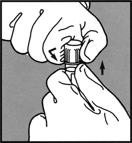
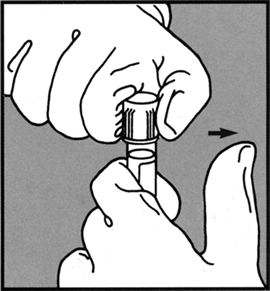
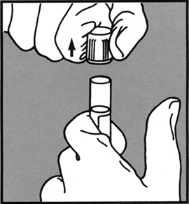
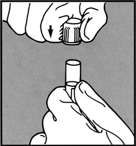
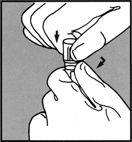

Tubo bd vacutainer® con tapÓn hemogard™
CARACTERÍSTICAS:
El tapón Hemogard™ proporciona máxima protección durante la rutina y manejo de muestras:
– Reduce el riesgo de salpicaduras al momento de destapar el tubo.
– Reduce el contacto con la sangre en el tapón.
– Proteje contra la sangre adherida al cuello externo del tubo.
INSTRUCCIONES DE USO:
|
Para quitar el tapón Hemogard™: |
|
|
1. Girar y jalar hacia arriba. Sostener el TUBO BD VACUTAINER™ con una mano, colocando el pulgar debajo del tapón Hemogard™. Con la otra mano girar el tapón y simultáneamente empuje hacia arriba con el pulgar. |
 |
|
2. Retirar el pulgar antes de levantar el tapón. No utilice el pulgar para empujar el tapón y separarlo del tubo. |
 |
|
3. Levantar el tapón. |
 |
|
Para colocar nuevamente el tapón Hemogard™: |
|
|
1. Coloque el tapón sobre el tubo. |
 |
|
2. Gire y empuje hacia abajo. Continúe girando y empujando hacia abajo hasta que el tapón esté completamente en su lugar. |
 |
PRECAUCIÓN: Todos los materiales biológicos deben ser manejados cuidadosamente. El contacto con los mismos puede transmitir hepatitis, HIV y otras enfermedades infecciosas.
DATOS COMPLEMENTARIOS: Para mayor información sobre asesoría técnica llamar a:
BECTON DICKINSON DE MÉXICO, S. A. de C. V.
Teléfono: (55) 5999-8200.
Directo: (55) 5999-8360.
® Marca registrada
www.bd.com/mx